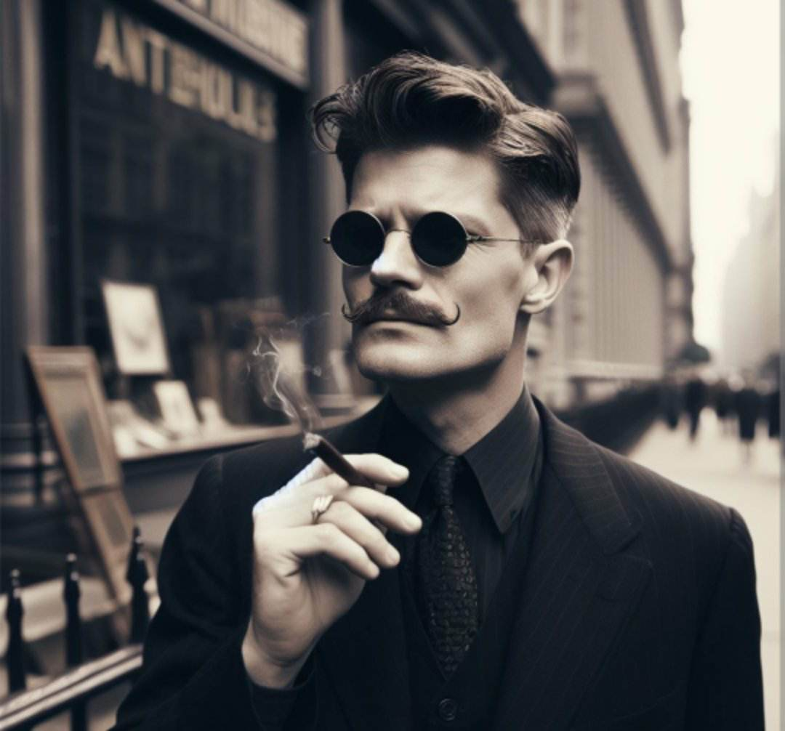

Crispin Pollick
(374¾ Points)
Male; Age 46; 5'5", 135 lbs.
| ST: 10 [0] | IQ: 15 [60] | Speed: 6.50 |
| DX: 15 [60] | HT: 11 [10] | Move: 6 |
| Dodge: 7 | Parry: 12 |
Advantages
Combat Reflexes [15] (Fright Check: 17); Eidetic Memory 2 [60]; Insubstantiality [112] (Carry Objects: Medium Encumbrance, +50%; Leaves Mental Signature: -10%; Turns off if unconscious); Invisibility [60] (Carry Objects: Medium Encumbrance, +50%; Leaves Mental Signature: -10%; Become Visible at Will: +10%; Turns off if unconscious); Lang: Ancient Egyptian [None Spoken/Native Written] [3]; Patron (Mr. Smoke) (9 or less) [10]; Lang: English [Native Spoken/Native Written] [6]; Lang: Transylvania [Native][Spoken/Written] [0]; Patron (Followers of the Right Hand) (15 or less) [60] (Equipment: Standard, +5; Special Qualities (Access to Magic in Non-magical World): Very Unusual, +10; Secret: -5; Subtraction (Minimal Intervention): -5); Reputation +4 (The Ghost - an assassin) [6] (Reaction: +4; Recognized by (Criminal Underworld and NY Coroner): Small class, ×1/3).
Disadvantages
Addiction (Cannabis) [-5]; Secret (Superpowered) [-20]; Duty (15 or less) [-25] (Involuntary: -5; Subtraction (Extremely Hazardous): -5); Enemy (Unknown Enemies of FRH) [-60] (Unknown: -5; Subtraction (Access to Magic in Non-magical World): -15); Secret (Hitman for The Five Families) [-30]; Secret Obsession 1 (Become a Vampire) [-5]; Trademark (Painted Name of Victim in Their Own Blood) [-15].
Quirks
Always Buying Incense; Collects bloody handkerkief from opponents; Grows Own Cannabis in Basement; Hates Garlic; Must Clean Victim's Face. [-5]Skills
Acting-18 [2]; Agronomy/TL6-15 [½]; Anthropology-16 [1½]; Archaeology-18 [2½]; Area Knowledge/TL6 (Egypt)-16 [½]; Area Knowledge/TL6 (NYC)-16 [½]; Astrology/TL6-14 [½]; Astronomy/TL6-14 [½]; Botany/TL6-14 [½]; Brawling-17 [4] (Parry: 12); Breath Control-16 [3]; Calligraphy-13 [½]; Carousing-12 [4]; Carpentry-16 [½]; Cartography/TL6-16 [1]; Chemistry/TL6-14 [½]; Chess-16 [½]; Criminology/TL6-15 [½]; Detect Lies-18 [2¼]; Diplomacy-15 [1]; Driving/TL6 (Automobile)-14 [1]; Fast-Draw (Knife)-16* [1]; Fast-Draw (Pistol)-16* [1]; Fast-Talk-18 [2]; First Aid/TL6-17 [1]; Gambling-18 [2]; Garrote-14 [½]; Guns/TL6 (Pistol)-19 [4]; History-17 [2]; History (Esoteric)-17 [2]; Holdout-17 [1½]; Interrogation-15 [½]; Intimidation-19 [2]; Knife-14 [½] (Parry: 7); Mathematics-15 [1]; Merchant-17 [1½]; Metallurgy/TL6-17 [2]; Naturalist-14 [½]; Occultism-16 [1]; Occultism (Vampire)-20 [3]; Poisons-15 [1]; Politics-16 [1]; Psychology-17 [2]; Research-16 [1]; Riding (Camel)-13 [½]; Riding (Horse)-13 [½]; Savoir-Faire-16 [½]; Savoir-Faire (Mafia)-18 [1½]; Shadowing-20 [3]; Sleight of Hand-14 [2]; Stealth-15 [2]; Streetwise-18 [2]; Surgery/TL6-13 [½]; Symbol Drawing-14 [½]; Theology-14 [½]; Tracking-18 [2]; Traps/TL6-15 [½].
*Cost modifiers: Combat Reflexes.
Equipment
Adjustment to Reflect Actual Carrying Weight (-22 lbs.); Smith & Wesson Military & Police .38 Special (cr 2d-1, Skill: 19; 2 lbs.; $30; Malfunction: crit.; SS: 10; Acc: 2; Half DMG: 120; MAX: 1500; RoF: 3~; Shots: 6; ST: 8; Rcl: -1; TL: 6); Belt, Leather (½ lbs.; $¾; TL: 6); Belt, Leather (½ lbs.; $¾; TL: 6); Belt, Leather (½ lbs.; $¾; TL: 6); Bottle of Good Liquor ($5); Cigarette Case ($1); Cigarette Lighter ($1); Clothing, Formal (All Black Suit - The Ghost; 4 lbs.; $20; TL: 6); Clothing, Formal (All White Linen; 4 lbs.; $20; TL: 6); Clothing, Formal (Full tailed Tuxedo, Orange Cumberbun, Black Tie; 4 lbs.; $20; TL: 6); Clothing, Ordinary (4 lbs.; $7; TL: 6); Dagger (imp 1d-3, Skill: 14, Parry: 7; ½ lbs.; $½; Reach: C); Garrote (piano wire / wooden dowels) (cut 1d-2, Skill: 11, Parry: 1; 1 lb.; $20; Reach: C; ST: 7; May not parry); Gloves (Tuxedo; 1 lb.; $4; TL: 6); Gloves, Winter (Black; 1 lb.; $4; TL: 6); Gloves, Winter (White; 1 lb.; $4; TL: 6); Ornate Scrimshaw Pipe ($5); Overcoat, Business (Black; 3 lbs.; $10; TL: 6; +4 to holdout); Overcoat, Business (White; 3 lbs.; $10; TL: 6; +4 to holdout); Shoes (Black) (PD 0, DR 1; 2 lbs.; $8); Shoes (Tuxedo) (PD 0, DR 1; 2 lbs.; $8); Shoes (White) (PD 0, DR 1; 2 lbs.; $8); Silver Ornate Flask (1 lb.; $5).Description
Crispin Pollick was not born Crispin Pollick. He entered the world as Colwin in 1877, in the wreckage of the Russo-Turkish War, with a dead father already behind him and a mother who fled to New York carrying whatever future she could still salvage. She kept him alive for fourteen hard years before tuberculosis took her too, and after that he belonged to orphanages, alleys, and anyone mean enough or organized enough to make use of a hungry boy. By sixteen he had run from the orphanage and into a street gang, where he learned early that other people's fear could be more dependable than their kindness.The fever came the summer he turned seventeen. It nearly killed him, and when it broke he discovered that something in him had changed. He could slip where other men could not, vanish when he needed to, and move through danger with the eerie ease of someone no longer fully answerable to ordinary rules. Colwin took those gifts as permission. He left the gang and set out to make himself rich, clever, untouchable, the sort of man who slept in fine hotels, ate expensive food, and never again had to beg for a place in the world. For a time he even managed it. The trouble was that money solved less than he had hoped. Luxury dulled him, but it did not fill him, and all his reinventions still left the same emptiness standing in the room when the doors were shut.
What finally seized his imagination was not wealth but horror. One night, while prowling for pocket change and opportunity, he saw a vampire feed. Most men would have run. Colwin stared too long and came away bewitched. The thing that should have disgusted him looked instead like perfection: power, appetite, elegance, immortality, a way of no longer being the frightened boy from the orphanage. He hid the body, stole the dead man's identity, and began to build a new life around the name Crispin Pollick. On paper there was an antique business. In practice there was a man teaching himself manners, underworld protocol, occult lore, and the habits of old money while nursing a private obsession with becoming something more than human.
That obsession led him into worse hands than any street gang had ever offered. Trying to settle the loose ends around his stolen life, he was caught, bound by magic, and forced into the service of the Firm and Mr. Smoke. What began as pressure became discipline, then employment, then damnation. Each job asked more of him than the last. He learned to move through side doors, hidden rooms, criminal societies, and places polite men pretended not to know existed. He became the kind of operative who could get evidence no one else could safely reach, and the kind of assassin who frightened people long before he ever touched them. By the time the Firm had him killing in earnest, the rumors were already spreading through New York: a man in black who might be seen, might not be seen, who could appear in a locked room, leave a corpse, and paint the victim's name in blood. That was when the underworld gave him his final title. Colwin had wanted riches. Crispin had wanted transformation. The city, with the ugly justice it reserves for compromised men, made him into the Ghost of New York.
Crispin still carries all of those selves at once: orphan, climber, occult obsessive, antiquarian fraud, invisible knife in the dark. He is useful, dangerous, and never as free as he looks. Under the polished clothes, the incense, the cultivated tastes, and the ghost-story reputation is a man who once saw a monster feeding in the dark and decided the real tragedy was not being one.